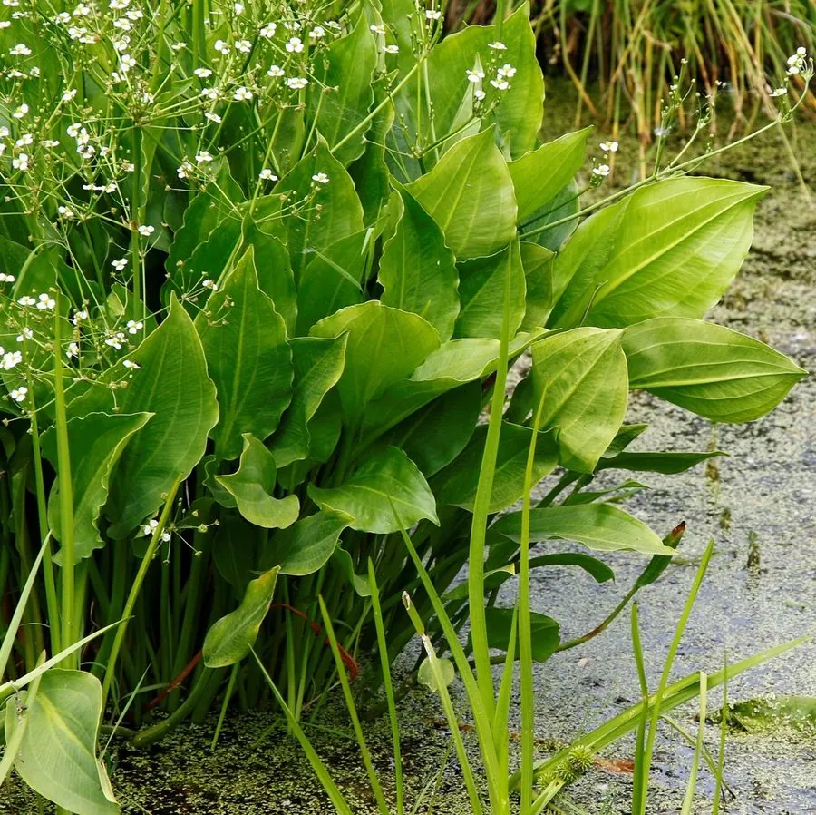

水生植物 · 植物界
泽泻 Alisma plantago-aquatica

泽泻科泽泻属多年生水生草本，叶片卵形、花序分枝，球茎可入药，常见于池塘沼泽，是中国传统药用植物。
- 分类
- 门被子植物门纲单子叶植物纲目泽泻目科泽泻科属泽泻属
- 栖息环境
- 池塘、沼泽、水田和沟渠的浅水区
- 地理分布
- 北半球温带地区，中国南北各地常见
- 保护级别
- 暂无评估
物种志
泽泻为泽泻科泽泻属的多年生水生草本，株高 0.5–1 米，具球形块茎。叶片基生，卵形或椭圆形，长 10–25 厘米，基部心形，叶柄长。花序为圆锥花序，分枝轮生，花小、白色，花期 6–8 月；果实为瘦果，聚生成球形。
泽泻广泛分布于北半球温带的池塘、沼泽、水田和沟渠，中国南北各地常见，喜温暖、阳光充足和富含腐殖质的浅水环境，适宜水深 10–30 厘米。它的块茎可入药，有利水渗湿、泄热之效，是中国传统药材；叶片和花序也有观赏价值。栽培以块茎和种子繁殖为主，需保持浅水；药用栽培需注意轮作和病害防治。
形态与习性
- 株高0.5–1 米
- 叶片卵形或椭圆形，基部心形
- 花期6–8 月，花小、白色
- 水深适宜水深 10–30 厘米
- 光照喜充足阳光
- 土壤富含腐殖质的塘泥
- 繁殖块茎、种子繁殖
- 主要用途球茎入药，水景观赏
趣味知识
- 泽泻的球形块茎可入药，有利水渗湿、泄热之效。
- 它的花序分枝轮生，花小白色，在水生植物中辨识度高。
- 泽泻常生长在水稻田和沼泽中，是常见的湿地植物。